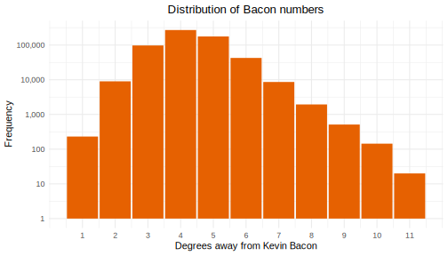
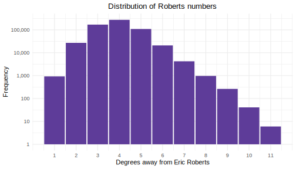

We were interested in investigating actors/movies data from IMDB. The data is conveniently available for download here (data description).
For sake of clarity, we omit directly quoting code. Readers interested in getting into the weeks should consult the Github.
Before we jump into the analyses, we first discuss the preprocessing done. We were primarily interested in movies typically played in theaters or streamed online, not television shows, web shorts, or adult content (all of which is included in the IMDB data download), so these were filtered out.
Basically all actors and movies (>99.9%) were in one large connected component, with a small smattering of other niche/amateur/independent content in numerous smaller disconnected components. These were filtered out too.
Our final dataset contains ~605k actors and 463k movies.
Frigyes Karithny is widely credited as the originator of the six degrees of separation hypothesis that in social networks, any two arbitrary persons can be connected by 6 edge traversals in the network. This was influential in popular culture, inspiring popular films, shows, and music.
One popular spinoff conjecture known was that everyone in Hollywood can be linked to Kevin Bacon in six or fewer film roles. This inspired us to use degrees as a centrality measure and try to identify the “center” of our IMDB network.
Using igraph, we constructed a graph from our edge list data frame based on costar relationships. First, we decided to see how connected people are to Bacon by computing everyone’s distance to him in the network, referred to as their bacon numbers. We found a mean degrees of separation of 4.301. Below is a histogram of these distances.

Next, we wanted to see if we could find a better center of the network. We setup parallelized jobs to traverse the top 5000 most-connected actors in the network (below this number, actors has so few connections that it’s inconceivable they could be the most central) and computed their distance to everyone else in the network.
Using this as our measure of centrality, we found Eric Roberts (brother of Julia Roberts and father of Emma Roberts) to be the most connected, with a mean degrees of separation of just 3.905. Below is a histogram of these distances.

Here is a side by side plot for comparison.